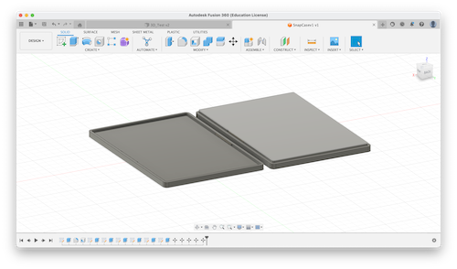
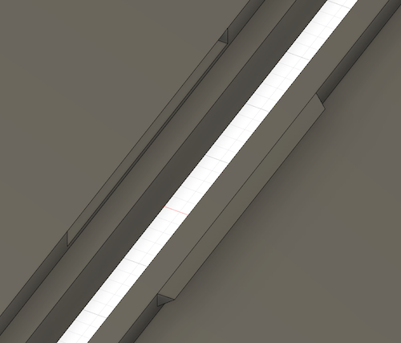
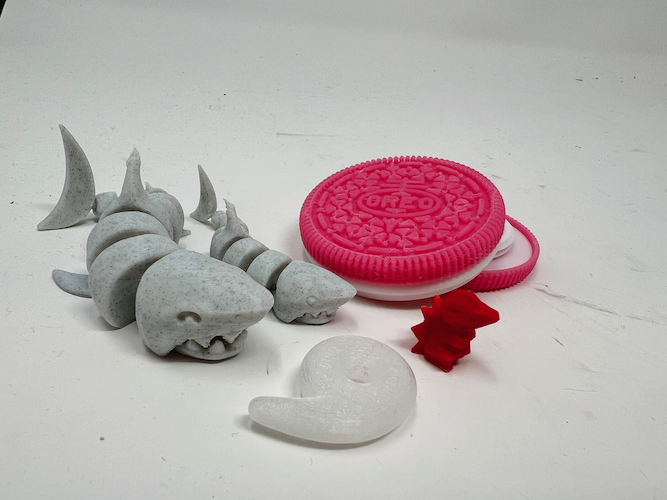

<div class="textcontainer">
<p class="margin"> </p>
<h3>Week 5: 3D Design & Printing</h3>
<p class="margin"> </p>
<div class="flexrow">
<a id="btn" href="wk5.zip" download>Download my files from this week!
</a>
</div>
<p class="margin"> </p>
<h4>Assignment: Design and Print Something</h4>
For my initial 3D print, I chose to make a part from an earlier idea, that being the gyroscopic cup-holder.
I made the cup and holder parts separately, and printed the cup. For the moment, I chose to attach the holder directly
to the desk mount (which I measured with calipers to fit the lab tables) as opposed to including a slider mechanism for the clamp.
For an unknown reason, the printer printed the model without supports, an issue which didn't reveal itself until nearly an hour into the print. I think one of my infill
settings might have overridden the support request. In any case, I'll be sure to include them for future prints. The hole in the cup holder linearly decreases in diameter such that
it is flush with a truncated cone, which is the shape I modeled the cup after. I chose to emboss and fillet all of the edges and corners by 1mm (every surface is 4mm thick) to avoid sharp corners.
<p class="margin"> </p>
<div class="flexrow">
<img src="./3dmodel.png" alt="The result of the print with no supports.">
</div>
<a download href='./05_3Ddesign/cupholder.bgcode'>Download my STL file <\a>
<p class="margin"> </p>
<div class="flexrow">
<p></p>
<p></p>
</div>
<p class="caption">Left: version one of the snap-fit case. Right: a close-up of the snap joint.</p>
<p class="margin"> </p>
<p class="margin"> </p>
<h4>Assignment: Scan Something</h4>
I used the RealityScan app to scan the abrasive lab soap. It took two attempts, and only after the second one was there clear resolution of the bottle's features.
It also unintentionally modeled part of the desk.
<p class="margin"> </p>
<div class="flexrow">
<p></p>
</div>
<p class="caption">An assembly of some of my 3D prints from this semester.</p>
</div>